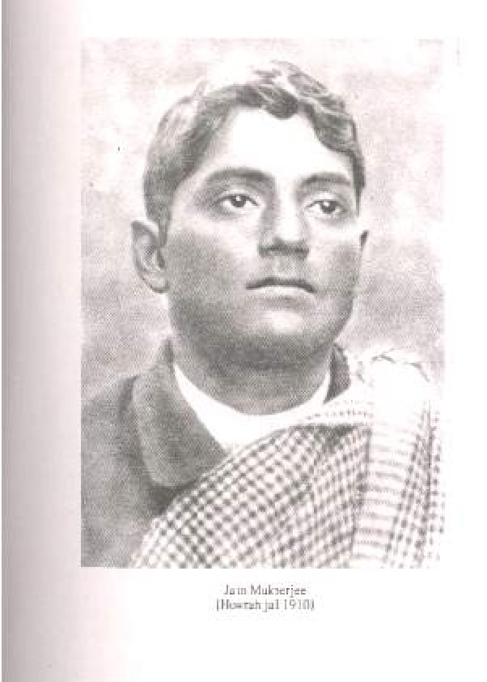

JATINDRANATH MUKHERJEE
(Bâghâ Jatîn)

Bhupendrakumar Datta
Jatindranath (or Jyotindranath, as he used to sign) was born on 8 December 1879 at his maternal uncles’ house at Koya in Kushtia Subdivision (now in Bangladesh) of Nadia district. His ancestral home was at Sadhuhati-Rishkhali in Jhenidah Subdivision of Jessore (now in Bangladesh, too). His father Umeshchandra, a well-to-do Brahmin of patriotic and spirited disposition, died when he was five and his sister, Benodebala, ten.
His mother, Sharatshashi, took the children to her parents’ house at Koya. Basanta Kumar Chattopadhyaya, her elder brother, brought up the children with exceptional care. He became the Government advocate at Krishnagar, where he got Jatindranath admitted into the Anglo-Vernacular School.
Sharatshashi laid solid foundations for the character of the future Jatindranath, morally and physically redoubtable. Side by side with his studies, he was encouraged to be proficient in wrestling, swimming and riding. At eleven, Jatindranath caught by the mane and controlled a restive horse that caused a scare on the street of Krishnagar. With his years grew in number the anecdotes about his acts of valour and charity. While in Government service, he knocked down with blows and kicks four British soldiers, who had insulted the “native”. He wrestled with, and killed with a dagger a tiger which was causing havoc in the countryside. He was thus called Bagha Jatin (‘Jatin valorous like a tiger’)..
Passing the Entrance examination in 1895, he joined the Central College, Kolkata, for his First Arts. Soon he started visiting Swami Vivekananda and was considerably influenced by the latter’s vision of a politically independent India as the spiritual guide of humanity. For acquiring a greater physical force and nerves of steel, the Swami sent him to his own trainer in wrestling, Ambu Guha and his son, Khetra Guha. This wrestling club was, towards the end of the 19th Century, a meeting point of several thought-masters of the time.
Anxious to be financially free and boycotting university studies which helped only preparing efficient servants of a colonial government, Jatindranath simultaneously took a steno-typist’s course, freshly introduced in India and leading to a lucrative career. On completing this course, he found immediately a job with Ahmutty & Co, a European merchant office, and he left study. In 1899 he joined at Muzzaffarpur the service of Barrister Pringle Kennedy, “a Premchand Roychand scholar of the University of Calcutta, a lawyer and Editor of the Trihoot Courrier. He (…) pleaded for a National Army for India from the Congress platform”[1] : this contact with Kennedy was a great impetus in Jatin’s creative approach to life. In August 1901 he was appointed in the Bengal Secretariat, before serving – since May 1904 – as a confidential clerk with the Bengal Government’s Finance Secretary, Henry Wheeler. According to the Police Report[2], “In 1907, he was sent to Darjeeling on some special work. From early he had had the reputation of a local Sandow and he soon attracted attention in Darjeeling in cases in which, true to his reputation as one of the earliest exponents of the physical force party, he tried to measure his strength with Europeans. In 1908 he was leader of one of several gangs[3] that had sprung up in Darjeeling, whose object was the spreading of disaffection, and with his associates he started a branch of the [Calcutta] Anushilan Samiti, called the Bandhab Samiti.”
Meanwhile, several influences had been working on him. Bankimchandra Chattopadhyaya’s Anandamath inspired the generation. Benodebala, then a childless widow, instilled patriotic fervour in him. The Guhas’ wrestling club introduced him to Sachin Banerjee. Sachin’s father, Yogendra Vidyabhushan, though a Deputy Magistrate, published exciting essays and biographies on Mazzini and Garibaldi. His writings attracted to his house prominent revolutionaries including Aurobindo Ghosh. Right from his first meeting Jatindranath Mukherjee at Vidyabhushan’s house, in 1903, the young man’s bearing impressed Aurobindo. Devoted service to the plague-stricken people induced Sister Nivedita to speak of Jatindranath to Vivekananda, and to discover that they had already met often.
In 1900 Jatindranath married Indubala daughter of Umapada Banerjee of Jeerut-Balagarh (Hugli). She was brought up in her maternal uncle’s family at Kumarkhali near Koya. The family’s Vaishnav traditions gave her the fortitude to bear sufferings calmly. In 1904 Jatindranath was spiritually initiated by Swami Bholananda Giri pf Hardwar, who was known to be infusing into several disciples a zeal for national independence.
Agitation against 1905 Partition of Bengal gave an impetus to the growth of Samitis or physical culture associations. Some of them were banned, some went underground. Revolutionary thinkers were preaching “Passive Resistance”, which really meant building up of a parallel government by the people. Sri Aurobindo knew that it presupposed a conscious nation, which Indians were not yet. As a first step towards arousing the people, he agreed with Jatindranath Mukherjee to conceive of acts of self-immolation under the patriotic impulse.
He initiated action. The journal Yugantar as well as a bomb factory were started. It all resulted in the martyrdoms of Prafulla Chaki and Kshudiram Basu, Kanailal Dutta and Satyen Basu. Other actions, initiated at Jatindranath’s instance, set brilliant examples of self-immolation by Charu Bose and Biren Dutta Gupta. The Yugantar ideal of defiance of death produced the desired effect: Awakening dawned.
Aurobindo later described Jatindranath as his right-hand man.[4] Their mutual relation was unknown. Aurobindo settled in Calcutta in 1906, when Jatindranath, under the cloak of Government service, visited towns, villages and ‘Samitis’, forming a loose federation of secret groups. Such an organisation was less vulnerable to conspiracy charges. Some of his activities remain unknown to this day because of the spirit of self-effacement in which Jatindranath worked.
His personality fascinated young men. To them his message was: Be men; read the Gita, never fear death. His headquarters for inter-provincial links were the ‘Shramajibi Samabaya’ managed by Amarendranath Chatterjee and, uniquely for Bengal groups, the ‘Chhatra Bhandar’, run by Nikhileswar Roy Moulick. Naren Chatterjee of Sibpur group had the mission of seducing Jat soldiers in the Calcutta Fort and Naren Bose of ‘Atmonnati’ group maintained contact with Indian soldiers in Upper Indian Cantonments. Rasbehari Bose later benefited by these as also by Swami Niralamba’s civilian organisations at Delhi, Lahore and other North Indian towns, particularly with the help of the Arya Samaj leaders.
When Biren Dutta Gupta killed a Government prosecutor in the crowded High Court
premises on 24 January, 1910, Jatindranath with 46 others was tried in the
Howrah Conspiracy case. The case failed. But Jatindranath lost the Government
job. He started contract business constructing Jessore-Jhenidah Railway line.
Earlier, during the anti-partition agitation there was an exodus of young men
in search of ways for achieving Indian freedom. Leaving India in 1906,
Taraknath Das – Jatindranath’s emissary – had been joined up by Guran Ditt
Kumar, Adhar Laskar and Panduranga Khankoje
(Tilak’s emissary); they organised
night schools for the Indian immigrants on the Western coast of North
America. Earnest about Jatindranath’s scheme of introducing a systematic
military training in India (training especially denied to the Bengalis),
Taraknath entered in 1908 the Norwich university in Vermont, “a high-class
engineering and military establishment, in order to receive military training.
He also applied for enlistment … in the Vermont National Guard, but this was
not permitted by the US authorities. It was noticed in the College that he was
bitterly hostile to England and voiced his hostility on all occasions.[5]
He had, in the meantime, been singled out as the editor of the Free
Hindustan published from New York, “an imitation of the Indian
Sociologist” (edited by Shyamaji Krishnaverma from London). Their efforts
led to the formation, in America, of the nuclei of the Ghadar party, later led by Hardyal and, in Germany, of the
Berlin Committee initaited by Birendranath Chattopadhyaya, Champakaraman Pillai
and others.
In 1911, Taraknath Das informed from California that Germany was preparing for
war against Britian. Deciding to take advantage of the war, Jatindranath
advised revolutionary societies to be prepared and to avoid overt acts. He
consulted his senior colleague, Nirlamba, at Brindaban, where Rashbehari was
also called. A provisional programme was drawn up.At this juncture, in spite of
great financial difficulties, Jatindranath sent out Satyen Sen to meet Tarak
Das in Seattle (USA) with a clear picture of the Extremist preparation. On
learning about this instruction from Satyen Sen, Tarak Das invited
Bhupendranath Datta – studying then in New York for his graduation – to join
him in Seattle. Two years later, on obtaining his M.A. from Brown University,
Datta was to leave for Berlin with a message from Tarak Das and join a batch of
highly patriotic Indian students, organising themselves into a Committee for serving India’s cause.
Inside India, existing revolutionary groups had been reorganising the Yugantar Party under Jatindranath’s leadership; the highly centralised branch of the Anusilan Samiti in Dhaka - believing more in a coup than in a revolution - dissented. The Anglo-German War began in August 1914. Before going underground, Jatindranath entrusted his sister Benodebala with the care of his wife Indubala, his daughter, Ashalata and his two sons, Tejendranath and Birendranath.
Birendranath Chattopadhyaya with a few members of the Berlin Committee contacted the German Foreign Office. A treaty followed envisaging all help for an Indian uprising, even an army of liberation strictly under Indian control invading India in a pincers movement : through Afghanistan and through Thailand via Burma. Aid arrangements were to be implemented by the German Embassy in America.[6] With it was attached an Indian Committee, of which Taraknath Das, Hemendra Kishore Rakshit Roy, Bhupendranath Dutta were the leading spirits and were working with the Ghadar Party. Some money was received at Harry and Sons in Calcutta. More being necessary, Jatindranath now permitted Naren Bhattacharya (M. N. Roy) to loot a British firm’s cash. Some more money was similarly collected.
Indian emigres, returning from the Far East via Canada, disturbed the silent preparations in the Punjab. Rasbehari sought Jatindranath’s advice. The latter in the company of M. N. Roy and Atul Ghosh visited Benares. Their conference with Rasbehari decided that an army mutiny in Upper India might precede a general rising. A provisional date was fixed. But betrayal baffled Rashbehari. Isolated skirmishes followed. Rasbehari escaped to Japan in May 1915.
Receiving messages from Berlin through Shrish Sen, and then from U. S. through Satyen Sen and Pingley, Jatindranath sent Bholanath Chattopadhyay to Gokarni near Goa and Dr. Jatin Ghosal and Harikumar Chakravati to the Sunderbans to unload arms from German ships. He himself went to Balasore and found shelter at Kaptipada in Mayurbhanj, then an Indian State. The U.S., meanwhile, grew anti-German. Besides, Indian revolutionaries in America, trusting the Czechoslovaks, who sought Allied help against the Austro-Germans, were betrayed. Czechoslovak reports were pursued by British Naval and Indian Central Intelligence.
The chartered German ship Maverik, compelled to leave the U. S. coasts without the expected quantities of aid, was intercepted and interned at Batavia. Other shipments met a similar fate. The Sunderbans party returned disappointed. Bholanath was captured. M. N. Roy, sent to investigate the causes of dislocation, could not return and reached U. S. via the Far East.
Clues, succeeding clues, exposed Harry and Sons in Calcutta, Universal Emporium at Balasore and eventually Jatindranath’s Kaptipada shelter. He got timely information but, characteristically, would not leave behind two comrades who were nine miles away. Exit was cut off, British police alerted village officers in Mayrubhanj and Balasore.
Hundreds of simple villagers, misled into believing that they were to apprehend ordinary criminals, were in pursuit. With occasional skirmishes, the revolutionists, running through thorny jungles and marshy lands, harried and hungry for days, at last took up position on 9 September 1915 behind an improvised trench in a bush on a hill-top at Chashakhand in Balasore.
Reinforced by the army unit from Chandbali, the police party surrounded them. An unequal battle of 75 minutes between the five revolutionaries with Mauser pistols and an overwhelming number of police and armymen with up to-date rifles ended with an unrecorded number of casualties on the Government side and on the revolutionists' side, with Chittapriya Ray Chaudhuri’s death, Jatindranath being mortally and Jatish Pal seriously wounded and Manoranjan Sengupta and Niren Dasgupta being captured after their ammunition ran out. Jatindranath breathed his last in the Balasore hospital on 10 September. Niren and Manoranjan were executed, and Jatish was transported for life.
During this trial, the prosecuting British official advised the Defence lawyer
to read a manuscript by Jatindranath and remarked: “Were this man living, he
might lead the world.” Jatindranath was known to be writing good English and
Bengali and contributing in handwritten magazines short stories and poems in
Bengali, some of them humorous, ridiculing antiquated social ideas and
practices.
Jatindranath knew that logically, in a country under bondage - owing to leakage and betrayals - such an ambitious plan could not but fail. He did consider this failure to be a pathway to success. Indeed - as reminds the eminent historian Amales Tripâthi[7] -, this operation dealt a serious blow to the British colonial policy, since definite chances were on the side of the Indians. He quotes the overtly admitted report by Charles Tegart - that notorious Commissioner of Police in British India - that the driving power of Jatin was immense; that this uprising had been extremely well conceived; that it could lead to Great Britain’s defeat in the First World War. Out of the ashes of these martyrs, and with the help of those who survived, in 1915, rose the phoenix of revolution incarnated in the Mass Movement led by Mahâtmâ Gandhi.
Uncommonly fearless and with superhuman physical strength, Jatindranath’s
intellectual and spiritual qualities, attributed by many to an inner
illumination, won deep esteem even of persons like Poet Tagore, Sri Aurobindo
and C. R. Das. Between his workers and Jatindranath there subsisted a relation
of rare devotion and love that sometimes reclaimed the moral outcast.
[Updated revision by Dr Prithwindra Mukherjee, CNRS, Paris]
Bibliography
* “Mukherjee, Jatindranath (1879-1915)” by Bhupendrakumar Datta in Dictionary of National Biography, ed. S.P. Sen, Institute of Historical Studies, Calcutta, 1974, Vol. III, pp162-165
* “Bagha Jatin” by Prithwindra Mukherjee in Challenge : A Saga of India’s Struggle for Freedom, ed. Nisith Ranjan Ray et al, New Delhi, 1984, pp264-273
* Bagha Jatin by Prithwindra Mukherjee, Dey’s Publishing, Calcutta, 1998 (3rd Edition), 128p [in Bengali]
* Sâdhak Biplabi Jatîndranâth by Prithwindra Mukherjee, West Bengal State Book Board, Calcutta, 1990, 509p [in Bengali]
A POET’S TRIBUTE TO BAGHA JATIN
THE HALDIGHAT OF NEW INDIA
Kazi Nazrul Islam
The life of Kazi Nazrul Islam (1899-1976) was the very demonstration of a spiritual convergence of the Muslim and the Hindu communities in their common endeavour to attain political freedom for India. Born to a poor but cultured family in Bardhaman (Burdwan) in West Bengal, Nazrul had loved and married Pramila Sengupta, a high-caste Hindu woman. Having a good command of Persian and Arabic in addition to his mother-tongue, Bengali, he flooded the country with songs and poems as much inspired by his Muslim culture as by his passion for Hindu mythology. The romantic temperament of Nazrul excelled both in tender, intimate love-songs and devotional hymns to Kalî - faithful to an age-old Bengali tradition of composition highlighted by the saint Ramaprasad - as well as in stormy, warlike anthems rallying the youth to the cause of the Motherland, side by side with immediate evocation of international events like the action of the Young Turks.
Towards the end of his high-school studies, Nazrul had come under the spell of the revolutionary leader Nibaran Ghatak working under the fiery personality of Bagha Jatîn (‘Jatin the killer of Tiger’), an affectionate nickname for Jatîndranath Mukherjee (1879-1915) who, after wrestling with a Royal Bengal tiger, had killed it with a dagger.(1) Jatin embodied the very spirit of defiance and dedicated patriotic service : one of his cherished dreams had been to nationalise the Indian army and introduce military education - till then denied by the British - among the youth of Bengal. Another major contribution of Jatin had been to encourage gifted composers to utilise the traditional forms such as the folk opera (yatra) as a vehicle of nationalist ideals. Since his childhood, Nazrul had joined the village troupe of léto drama, which also practised some of those objectives.
When, in 1916, the Bengal Regiment was created as a tribute to Jatin’s memory, Nazrul joined it and went to Mesopotamia. After the War the Regiment having been disbanded, Nazrul returned to Calcutta in 1919 to discover that his writings in the literary magazine of the Bengali Muslims had already turned him into an eminent young writer. By the side of two major and elderly poets - Mohitlal Majumdar and Jatîn Sengupta - Nazrul represented one of the post-Tagore trends of Bengali poetry. Soon after August 1920 when M.N. Roy - Jatin Mukherjee’s disciple - was invited by Lenin to present his Thesis on National and Colonial Policy, Nazrul’s friend Muzzafar Ahmad served Roy as one of the pioneers to found the first Communist party of India. Nazrul was never indifferent to leftist ideology. Though Tagore and Gandhi were fond of his restless enthusiasm, intimately associated with the changing political scene of the country, Nazrul remained loyal to the radical revolutionary action (meaning those who did not follow Gandhi’s non-violent strategy) and faced proscription for several of his books under the British. Imprisoned in 1922, he launched a hunger-strike to protest against the ill-treatment of political prisoners.
Nazrul’s poem on Jatin Mukherjee’s heroic self-undoing - ‘The Haldighat of New India’ - represents the typically revolutionary aspect of the poet : published earlier in a magazine, it was included in his book, Pralaya-shikha (‘Flames of Apocalypse’), published in 1930 - almost at the same time when the Chittagong Armoury Raid was to shake the country. This publication would have again thrown him into prison, had not the Gandhi-Irwin pact modified the state of affairs in India. Even proscribed, it remained immortal in the memory and in the heart of thousands of militant nationalists. The present translation and introduction were published for the first time in a symposium entitled The Worlds of Muslim Imagination.(2)
The death of Nazrul’s eldest son in 1930 pushed him into a profound spiritual crisis : the tussle between an inward leap and the lust for a hectic public life as a successful composer and director of music for the All India Radio (Kolkata) ended up in an incurable amnesia in 1942 and enshrouded the poet’s consciousness till his last breath in 1976. Honoured in India, Pakistan and Bangladesh, Nazrul’s collections of poetry have appeared in East European countries, including erstwhile Soviet Russia.
Prithwindra Mukherjee
C.N.R.S. (Paris)]
(1)
Balasore (3) on the bank of the river Budha-Balam,
The Haldighat (4) of New India,
The horizon of dawn turned red with battle,
As though it was the verge of dusk.
Tangent to the azure vault of the sky
Trembled the azure mountain-peaks :
Whose is this divine madness to fetch
A setting sun back to zenith’s core ?
With gushes of blood from his throbbing heart
He reddens the pallor of the sun,
The skies re-echo the rolling of drums
Shaking Heaven’s foundation.
Inside the prison, all of a sudden,
Surged the sea on Mother Devaki’s (5) breast,
The palaces at the city of the titans
Crumbled under a bolt from the blue.
Goblins by their side, dance Bhairava (6) and Shivanî
In the drama of death on the cremation-flame,
Balasore on the bank of the river Budha-Balam,
The Haldighat of New India.
(2)
Ever saw Abhimanyu’s (8) desperate battle ?
If not, come and witness here :
Four young warriors trampling in thousands
Soldiers of the King of half the World !
Look there - future India’s leader -
Equal to Pratap (9) and Napoleon,
Maddened by battle, Jatindra rushes
Against Saturn like a charging cloud.
Behind him and by his side
Roar the three young tiger souls :
Chittapriya, Nîren and Manoranjan (10),
The formidable trident in Bhairava’s hand,
Maratha and Jat and Rajput and Sikh (11),
Come to admire the Bengalis battle
In Balasore on the bank of the river Budha-Balam,
The Haldighat of New India.
(3)
See and learn how four deadly warriors
Decimate the ranks of four thousands,
See how Mahakal (12) outwits the fatal
Doings of the fair-skins of Lalbazar (13),
Armed wars have you seen in scores,
But see now the war of unarmed souls,
Soul if you have, see how the brave heart
Can take in thousands the enemy’s soul !
Come non-violent Buddha-mongers
To witness these violent Buddhas’ glory,
They who with smile know how to quench life,
Know how to shed life smilingly.
India in bondage, for the first time here
Utters the mantra of India free
In Balasore on the bank of the river Budha-Balam,
The Haldighat of New India.
(4)
Before that glory stoops the sky
And Heaven’s gates are wide open,
While the blue mountains seem to carry
India’s sacred homage to Shiva. (15)
Up from the peaks, companions of Ether,
Rings the Heroes’ noble call :
« Here we have found the way to Paradise,
Come and join us on this path
Where we leave the living imprints
Of the fresh blood gushing from our heart,
Upon this stairway stained with blood (16)
Cleanse yourselves of servitude.
Come, you battalions of the Motherland,
Cross the fortress’s welcoming gates ! »
- Balasore on the bank of the river Budha-Balam,
The Haldighat of New India.
Translated from Bengali
with notes by
Prithwindra Mukherjee
Notes
1. Sen (S.P.), Dictionary of National Biography, « Mukherjee, Jatindranath (1879-1915) », Calcutta, 1972-74, Vol.III, 162-165
2. Hashmi (Alamgir, ed.), The Worlds of Muslim Imagination, Gulmohar, Islamabad, 1986, 109-112, 241-2, 264-5, 267
3. An important town in Orissa, on the Bay of Bengal
4. Famous battle-field in Rajasthan where, in June 1976, Emperor Akbar’s forces led by his loyal Hindu General Man Singh fought the indomitable Hindu Prince Rana Pratap Singh (cf : Note 9)
5. Mother of Krishna, imprisoned by her cousin Kansa, the wicked monarch of Mathura, while she was pregnant : led by an oracle, the King believed that the new-born nephew was to overthrow him one day.
6. Shiva (the third principle - Destroyer who facilitates a new cycle of existence - in the Hindu Trinity), in his mood of annihilation.
7. Shiva’s wife in her rôle as the Killer of the Evil.
8. The heroic son of Arjuna who typifies in the Indian epic (the Mahabharata), the activist will of the individual soul, a thirst for the Divine Perfection. This young man fought with valour against the most competent generals of the epoch, before laying his life at the battle of Kurukshetra, determined to establish the reign of Righteousness.
9. Famous Rajput Prince known for his love of independence (cf : Note 4)
10. Chittapriya Ray-Chaudhury (1894-1915), Nîrendra Dasgupta (1892-1915), Manoranjan Sengupta (1898-1915) ; Nazrul Islam overlooked the fourth companion of Jatin Mukherjee - Jyotish Pal (1890?-1924) - who fought in that decisive battle.
11. The fabulous warrior communities of India ; in contrast, the Bengalis have the reputation of having a weak physical constitution, given to high ideals and day-dreams. It isinteresting to note that the major charge against Jatin Mukherjee and his party during the trial (1910-11) was « conspiracy to wage war against the King-Emperor » and « tampering with the loyalty of the Indian soldiers » (mainly with the 10th Jats Regiment) [cf : Sedition Committee Report, 1918]
12. Another name of Shiva, personification of Great Time
13. Calcutta headquarters of British Indian Police, notorious for ill-treatment
14. The sacred esoteric formula pronounced before the sacrificial Fire
15. Another name of Shiva, in his serene and auspicious aspect
16. The very last words Jatin Mukherjee uttered were : « Oh, these wounds are still bleeding ? Fortunately every drop of this blood has been shed for the Motherland ! »
The Contributor
Prithwindra Mukherjee (b. 1936, Kolkata) was brought up at the Sri Aurobindo Ashram School - which was to become the famous Sri Aurobindo International Centre of Education – in Pondicherry : after teaching there for eleven years (Bengali, French and English language and literature), he settled in Paris with a French Government Scholarship (1966-70), successfully defended at the Sorbonne a first thesis on Sri Aurobindo (1970) and, for ten years, had several appointments : lecturer on Indian civilisation and philosophy in two faculties; producer of features on Indian culture and music for Radio-France; free-lance journalist for French and Indian press. After visiting the USA as a Fulbright scholar, in 1981, he joined the French National Centre of Scientific Research in Human & Social Sciences Department.
The youngest poet represented in The Golden Treasury of Indo-Anglian Poetry edited by V.K. Gokak (Sahitya Akademi, New Delhi, 1970), he is author of about fifty books and more than 350 articles in Bengali, French and English, on topics concerning Indian Culture.
Since his childhood Prithwindra was deeply interested in the life and the times of his grandfather (father’s father) Bagha Jatin. Enriching his family archives, he corresponded with and interviewed important followers of Bagha Jatin, consulted official records kept in Indian, European and American archives. His second thesis for Doctorat d’Etat (PhD), supervised by Raymond Aron at University Paris IV, explores the spiritual roots of pre-Gandhian phase of India’s freedom fight (1893-1918).
He is one of the founder-members of the French Association of Literary Translators.
[1] Bimanbehari Majumdar, Militant Nationalism in India, Calcutta, 1966, p111, p165
[2] W. Sealy, Connections with the Revolutionary Organisation in Bihar and Orissa, 1906-16,
[3] They all represented a single group, as admitted by the Report classified as Home Polit-Proceedings A, March 1910, No. 33-40 (cf Sumit Sarkar, The Swadeshi Movement in Bengal, 1903-1908, New Delhi, 1977, p376
[4] Sri Aurobindo’s exact words were : "He was one of my most trusted lieutenants, a wonderful man who would belong to the front rank of humanity. Such beauty and strength combined into one I have not seen. His stature was like that of a warrior." (Sisirkumar Mitra, Resurgent ndia, Allied Publishers, 1963, p367).
[5] J.C. Ker, ICS, Political Trouble in India, A Confidential Report, Delhi, 1973 (repr.), p120. Also consult : (i) “Taraknath Das” by William A. Ellis in Norwich University, 1819-1911, Montpellier, 1911, Vol. III, pp490-491, illustrated (with two of Tarak’s photos); (ii) “The Vermont Education of Taraknath Das : an Episode in British-American-Indian Relations” , Ronald Spector, in Proceedings of the Vermont Historical Society, Vol. 48, No.2, 1980, pp88-95
[6] German Foreign Office Documents, 1914-18 (Microfilms in National Archives of India, New Delhi). Also, San Francisco Trial Report, 75 Volumes (India Office Library, UK) and Record Groups 49, 60, 85 and 118 (U.S. National Archives, Washington DC, & Federal Archives, San Bruno)
[7] Amales Tripathi, svâdhînatâ samgrâmé bhâratér jâtiya congress (1885-1947), Ananda Publishers Pr. Ltd, Kolkâtâ, 1991, 2nd edition, pp77-79